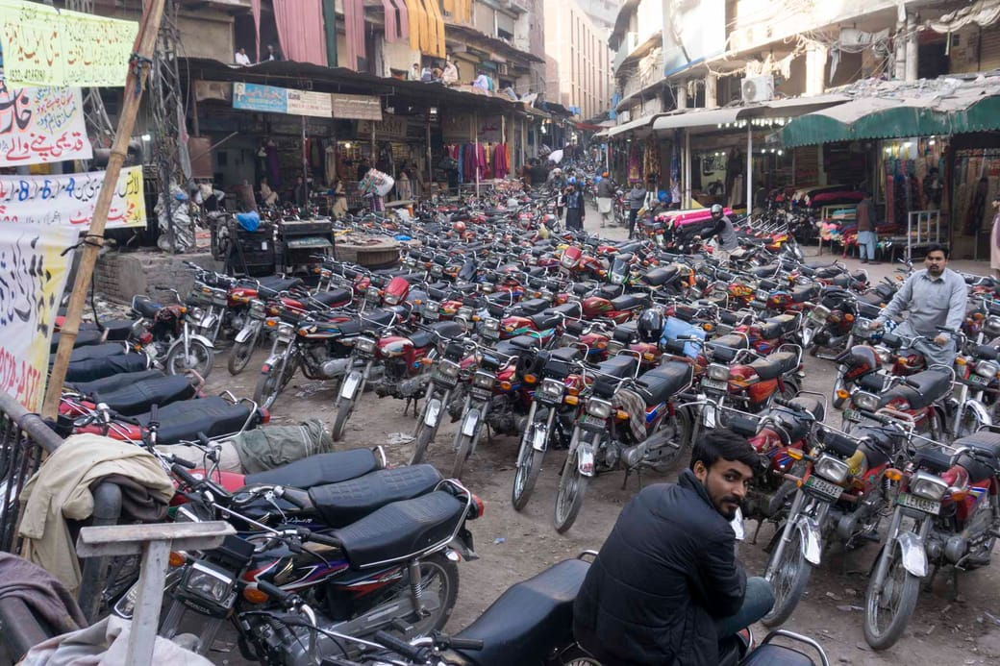
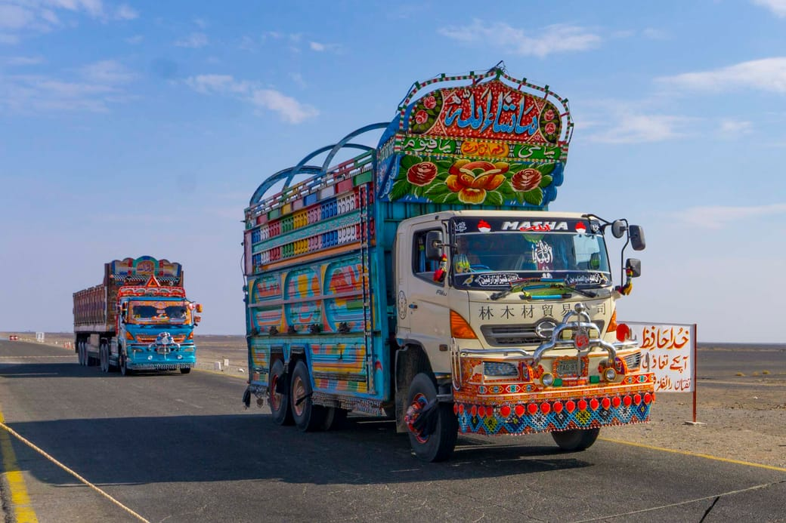
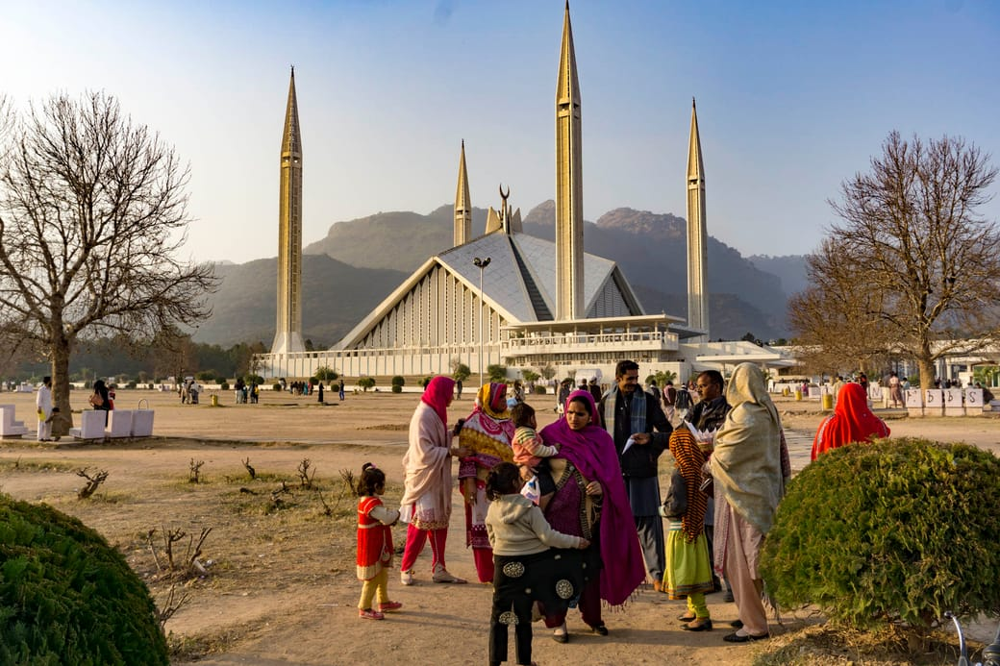
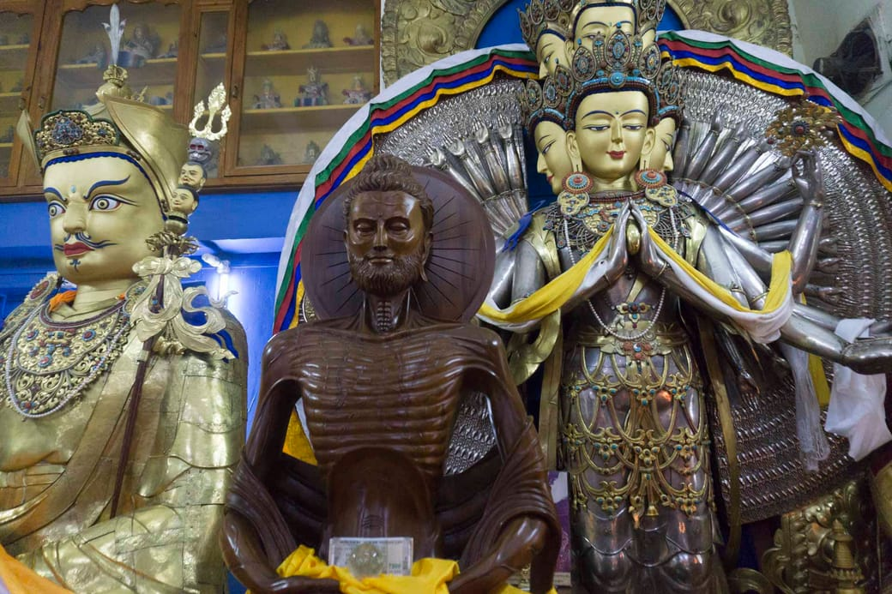
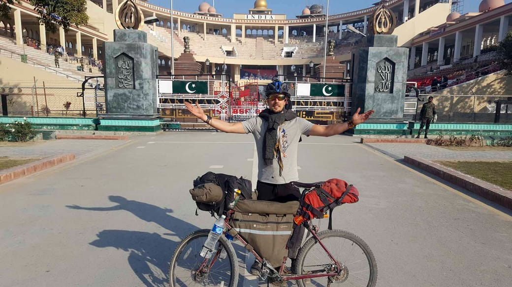

It has been more than two months since I crossed the Wagah border from Pakistan into the Land of spices. The border crossing hosts a dramatic daily flag exchange ceremony, where both countries display their rivalry in a parade. Yet apart from religion, much less differs between these countries than their antagonism seems to suggest. In fact, much of the image we have about India – its crowdedness, the spicy food, the noisy chaos, its addiction to cricket and Bollywood movies – also applies to Pakistan.
A traveler might notice that India is a bit wealthier than Pakistan. For instance, more people have smartphones. There is more than just one type of motorcycle. The sweet shops have polished vitrines to display their cookies. Mumbai and Delhi have working metro lines, while Lahore and Karachi barely began its construction. Cyclers will rejoice at the equally bad road conditions in both countries. But hour-long power outages occur daily in most Pakistani cities, and rarely in India. Overall, India is about 33% percent richer (per capita) than Pakistan, and that number seems to be accurately reflected in those those differences. Both countries remain really poor – the individual wealth is on average about a eighth of that in France.

A typical parking in Lahore, Pakistan
Pakistan is also the most conservative society I have encountered in my bicycle trip (in terms of conserving family values as opposed to individual liberties). Not far behind lies its Hindu counterpart. For both India and Pakistan, arranged marriages are still the norm. However in Pakistan, most marriages happen within the family – more than half the weddings are between first degree cousins. The change brought by globalization and western liberalism seems to affect India at a faster pace than Pakistan. An increasing portion of the younger generation in Indian big cities are now getting “love-married”. Still, they’ll have to wait a generation or more before being able to display any affection in public. Meanwhile, Pakistan straight out forbids any interaction between strangers from different genders. This rule is also applied inside the household. Often, I was not allowed to see the host’s wife that so kindly cooked my dinner. Both countries are patriarchal, and men dominate street interactions and public life – but this has been my environment ever since I traveled east of Istanbul seven months ago.

Pakistani Trucks in Balochistan
While being the most conservative people, Pakistanis were also the most curious and helpful. Indeed, from all countries i have visited, the less tourists there were in a country, the more welcoming the local people. If I define “helpfulness” as the willingness of locals to offer unsolicited help, then my ranking would go as follows (from most to least helpful): Iran, Pakistan, Azerbaijan, Georgia, Turkey, the Balkan states, India, Western Europe (Germany, France, Greece, Switzerland). Yes, Pakistan and Iran top the list by far – the countries which most people assign to their “dangerous no-go zone”.
Both countries are as expressive in their clothing as they are spicy in their food. Many Pakistani women wear hijabs (or dupattas) as colorful as the Indian saris. Pakistan win the contest of the most beautifully painted road trucks. When it comes to music, it was hard for me to distinguish the folklore songs from either side of the border. Although many will probably call out for blasphemy when I write this. I vividly recall my first interaction with Bollywood when I heard that song blasted on speakers across the streets of Sukkur, Pakistan.

Colorful Hijab Wear in Islamabad
However, and more importantly, India is much more diverse in its practice and interpretation of religions. Hinduism is tolerant of criticism and differing interpretation, and the worship of different Gods is openly endorsed in Hindu scriptures such as the Bhagavad Gita. Islam, on the other hand, is known for its strict prescription of spiritual worship. Hindu society has a long tradition of being stratified into casts, while Islam has fought for an egalitarian society since its inception. That is not to say that there is no discrimination in Pakistan, but the waiters, cooks and other working staff effectively approached me with more confidence and a more peer-like way than in India.

India worships a variety of Gods.
Here: Avalokiteśvara in the buddhist Temple in Dharamshala
The two-nation theory sprang up from the “incompatibility” of the Muslim and Hindu ways of life. This seed idea has finally led to the partition between Pakistan and India in 1947. Since then, a sense of national identity seems to have taken over as main force opposing both countries. Crossing them by bicycle has given me the privilege of experiencing both cultures over the span of three months. My personal impression is that, as with most divisions in this world, this separation is mostly self-imposed. Recurrent political incidents galvanize the people, whose only source of information about one another stems from the media.
Being among the lucky few who have seen both sides from close up, I felt compelled to write about how my perception of the ground reality. Differences in religion, politics and social structure are undeniable. But spend a night with a family from either countries and you won’t feel the difference. Those people share the same heritage, the same language, the same dreams. History has taught us many times that polarization and wars between nations are instigated in a top down fashion. In a time of rising nationalism in the West, let us realize where those divisions come from. It is our choice to sustain them by believing in them – or not.

Crossing by bike at the Indo-Pakistan Wagah border